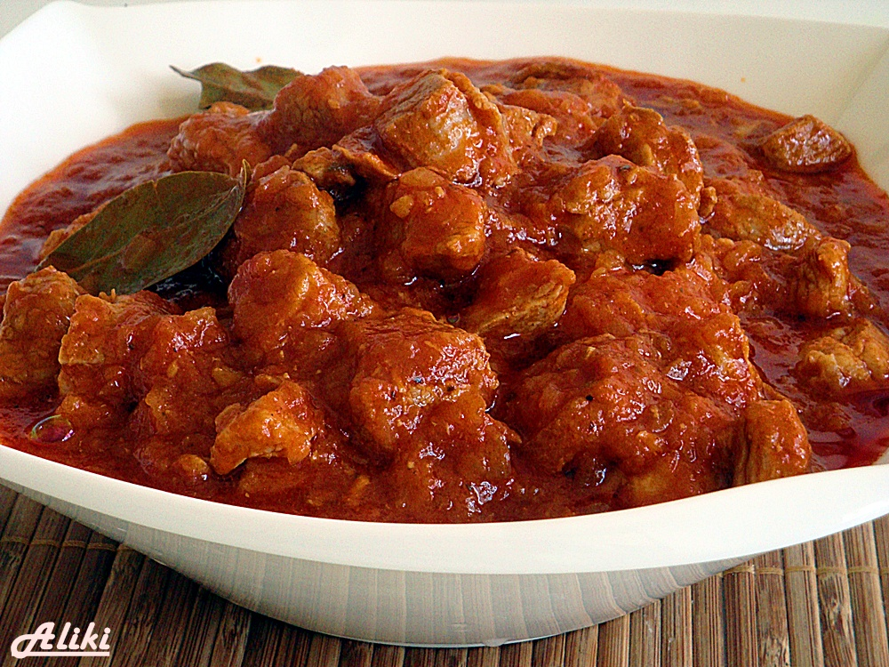

Goulash
Home

Description
This Goulash recipe is a spicy way to dress up stew beef. It is spicy but not mouth-burning! It can be made with cheaper cuts of beef and will still turn out very tender. If the stew gets too thick, add a little water while cooking. Garnish with sour cream.
Ingredients (for 8 servings)
- 1/3 cup vegetable oil
- 3 onions sliced
- 2 tablespoons Hungarian sweet paprika
- 3 tablespoons salt, divided
- 1/2 tablespoon ground black pepper
- 3 pounds beef stew meat, cut into 1 1/2 inch cubes
- 1 1/2 cups water
- 1 can tomato paste
- 1 clove garlic
Steps
-
Heat oil in a large pot or Dutch oven over medium heat. Cook and stir onions in oil until soft, 2 to 4 minutes. Remove onions and set them aside.
-
Combine paprika, 2 teaspoons salt, and pepper in a medium bowl. Coat beef cubes in spice mixture, and cook in the onion pot until brown on all sides.
-
Return onions to the pot with beef; pour in water, tomato paste, garlic, and remaining 1 teaspoon salt. Bring to a boil, then reduce heat to low. Cover and simmer, stirring occasionally, until meat is tender, 1 1/2 to 2 hours.